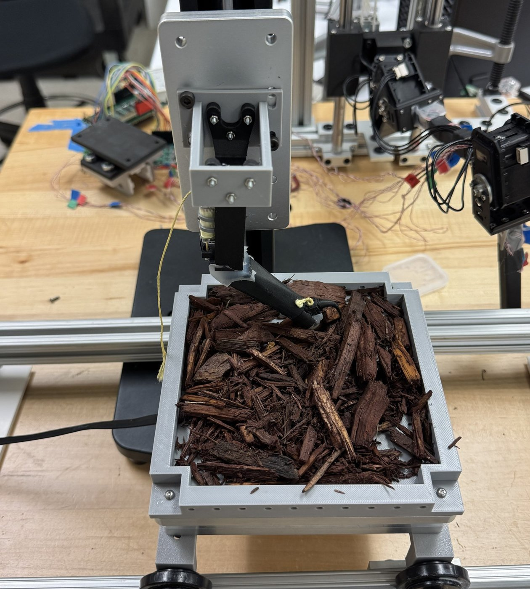
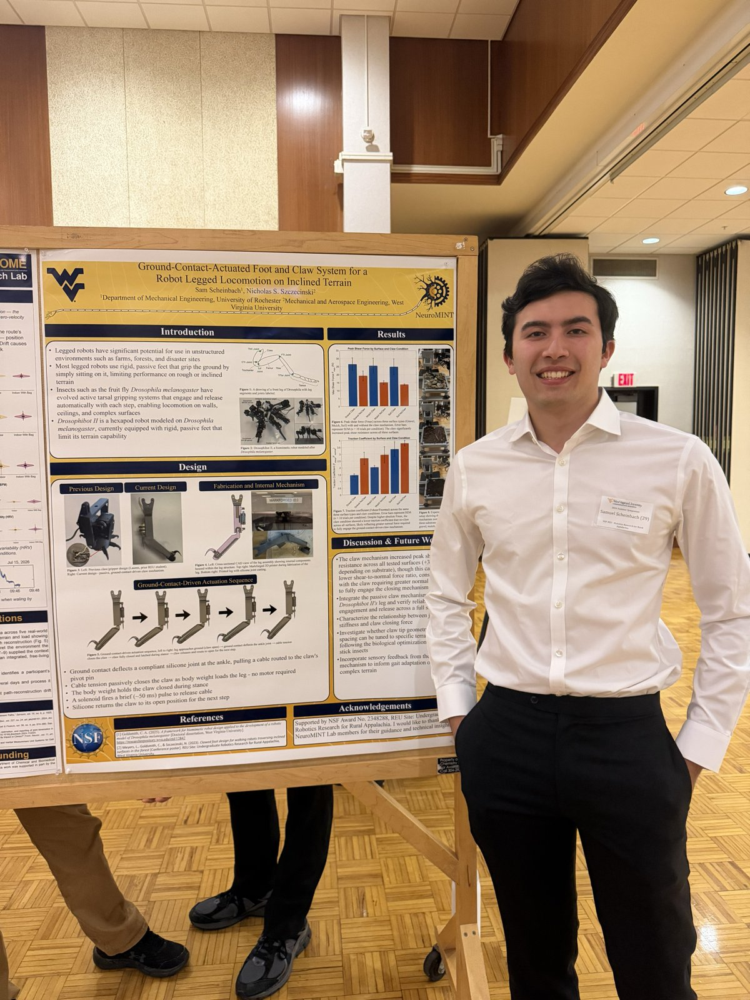

Passive Claw for Drosophibot II
A ground contact actuated foot and claw that lets Drosophibot II, a hexapod robot modeled on the fruit fly Drosophila melanogaster, grip loose and inclined terrain without a motor to close it.
- My role
- REU researcher: mechanism design, fabrication, electronics, testing
- Mentor
- Dr. Nicholas S. Szczecinski, NeuroMINT Lab
- Tools
- Fusion 360, SolidWorks, Markforged 3D printing, silicone casting, Arduino Mega
The problem
Legged robots could work in unstructured places like farms, forests, and disaster sites, but most use rigid, passive feet that grip only by resting on the ground, which limits them on rough or inclined terrain. Insects like Drosophila solve this with tarsal claws that engage and release automatically with every step. Drosophibot II still had rigid, passive feet, and my project was to give it a claw that works the same way.
How it works
The claw is driven by ground contact rather than a dedicated motor. I split the leg's rigid tibia and tarsus segment and added a compliant silicone joint at the ankle. When the leg touches down, ground contact deflects the joint and pulls a cable routed to the claw's pivot pin, so the claw closes as body weight loads the leg. Body weight holds the claw closed through stance. At the end of the step, a solenoid fires a brief pulse of about 50 ms to release the cable, and the silicone returns the claw to its open position for the next step.
The design replaced an earlier claw and gripper built by a previous REU student, and it went through a Bowden cable concept before arriving at the ground contact driven version. The leg was printed on a Markforged printer, with the silicone joint cast in place.
Electronics
I wired and debugged the solenoid driver around a TIP122 Darlington transistor with a 1N4004 flyback diode on a 12 V supply, driving a pulse duty DSML-0224-12 solenoid from an Arduino Mega. Along the way I tracked down a firmware bug that held the solenoid on for 2000 ms instead of a 50 ms pulse and was causing it to overheat.
Testing and results
I tested the mechanism on three substrates, gravel, mulch, and soil, with and without the claw, running ten trials per condition and measuring peak shear force and traction coefficient. The claw significantly increased peak shear resistance on all three surfaces. The traction coefficient, the ratio of shear to normal force, came out lower with the claw, which likely reflects the extra normal force needed to fully engage the closing mechanism.

Next steps
The next stage is to integrate the claw into Drosophibot II's leg and verify reliable engagement and release across a full stride. Beyond that, I would characterize how joint stiffness affects claw closing force, test whether claw tip geometry and spacing can be tuned to specific terrains as stick insects' claws are, and use sensory feedback from the mechanism to adapt the robot's gait on complex terrain.
Lab support
Outside the claw itself, I set up communication with the lab's AMTI force plate, working through its RS-232 to USB adapter chain until the MiniAmp amplifier responded to queries from the NetForce software.
Literature review
Alongside the design work, I wrote a literature review of 28 sources on [topic, e.g. insect tarsal attachment and passive gripping in legged robots], revised over several rounds.
Poster
I presented the project as "Ground-Contact-Actuated Foot and Claw System for Robot Legged Locomotion on Inclined Terrain" at the 2026 West Virginia University Summer Symposium. The work was supported by NSF Award No. 2348288, REU Site: Undergraduate Robotics Research for Rural Appalachia.
